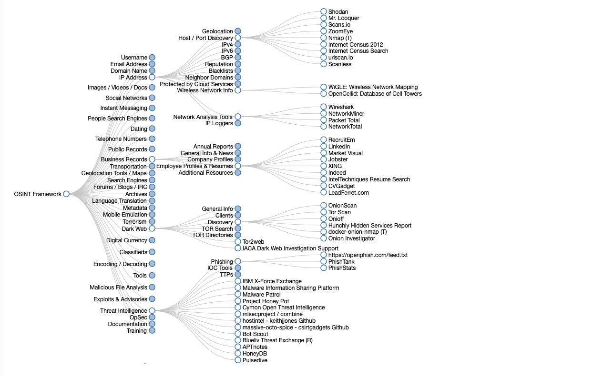

|What is OSINT?
The first step in a targeted attack – or a penetration test or red team activity – is gathering intelligence on the target. While there are ways and means to do this covertly, intelligence gathering usually starts with scraping information from public sources, collectively known as open-source intelligence or OSINT.

OSINT is different from other forms of intelligence gathering in several ways, including the following:
- OSINT is focused on publicly available and legally obtainable information, whereas other forms of intelligence gathering may involve confidential or classified sources.
- OSINT uses various sources, including social media, news articles, public records, and government reports. In contrast, other forms of intelligence gathering may focus on a specific source type.
- OSINT often involves using advanced analytical techniques, such as natural language processing and machine learning, to extract insights and intelligence from large volumes of data. In contrast, other forms of intelligence gathering may rely more on human analysis and interpretation.
What is OSINT Used For?
By gathering publicly available sources of information about a particular target, an attacker – or friendly penetration tester – can profile a potential victim to better understand its characteristics and narrow the search area for possible vulnerabilities. Without actively engaging the target, the attacker can use the intelligence produced to build a threat model and develop a plan of attack.
Gathering OSINT on yourself or your business is also a great way to understand what information you are gifting potential attackers. Once you know what kind of intel can be gathered about you from public sources, you can use this to help you or your security team develop better defensive strategies.
- Source: sentinelone
- Wrote: January 21, 2023 | Bahman 1, 1401
- Updated:
- Posted: January 21, 2023 | Bahman 1, 1401